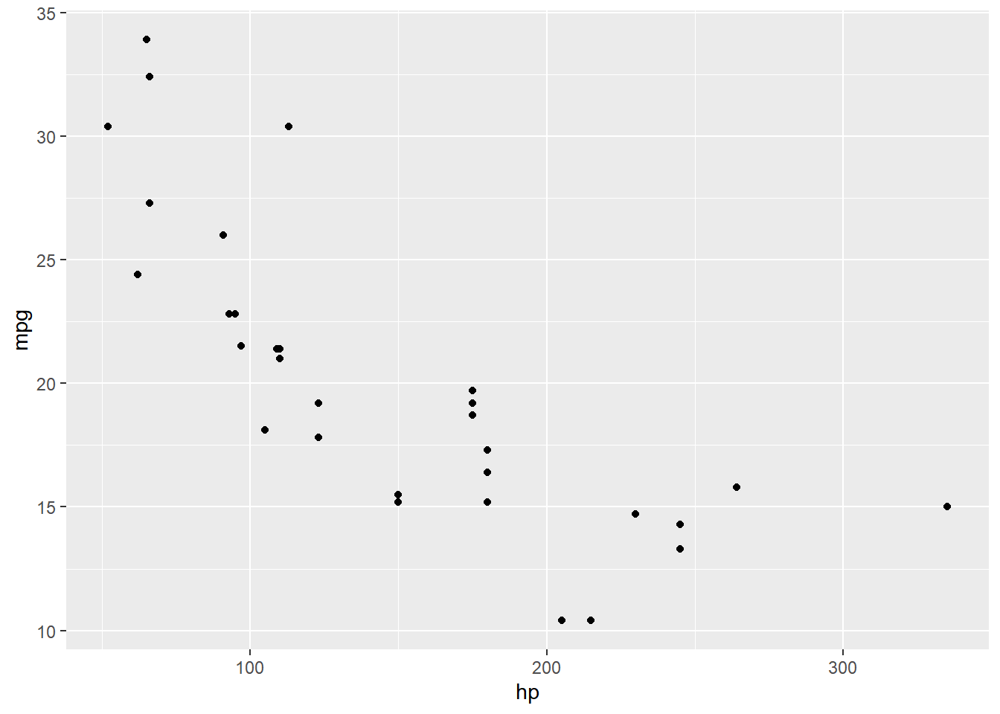
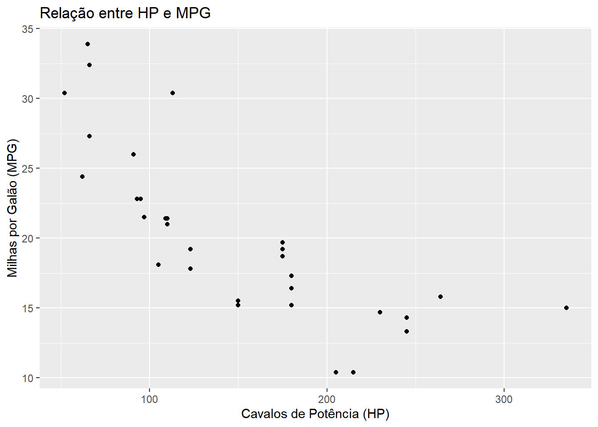

R é uma linguagem de programação estatística desenvolvida especificamente para tarefas de manipulação e análise de dados. Junto ao Python, o R é uma das duas principais linguagens de programação em ciência de dados, ganhando destaque por suas poderosas capacidades analíticas e vasta comunidade de usuários.
1.1. História e Desenvolvimento
O R foi concebido como uma versão de código aberto da linguagem S, que foi desenvolvida na Bell Labs. Desde seu lançamento, a linguagem base é desenvolvida e mantida pela The R Foundation e pode ser baixada gratuitamente no site oficial. O R tem evoluído continuamente, incorporando novos recursos e funcionalidades ao longo do tempo.
1.2. Extensibilidade da Linguagem
A verdadeira força do R reside em sua extensibilidade. A linguagem base pode ser ampliada através de pacotes, que são coleções de funções e estruturas de dados que estendem as capacidades do R para diferentes tipos de análises e tarefas. Os pacotes oficiais estão disponíveis no CRAN (The Comprehensive R Archive Network), um repositório abrangente de pacotes que podem ser facilmente instalados e gerenciados dentro do ambiente R. Essa extensibilidade permite que o R seja adaptado e melhorado continuamente pela comunidade global de usuários, que desenvolve e compartilha pacotes para quase todas as necessidades analíticas imagináveis.
1.3. Ambiente de Desenvolvimento
Enquanto a linguagem R em si fornece a base para a programação estatística, o ambiente em que ela é executada também é crucial. O R base instalado oferece uma interface gráfica (GUI), mas com recursos limitados. Para uma experiência de desenvolvimento mais robusta, muitos usuários preferem usar RStudio, um ambiente de desenvolvimento integrado (IDE) desenvolvido pela Posit e que oferece uma série de ferramentas úteis, como a edição de scripts, depuração, visualização de dados e muito mais.
É possível usar o R em outro IDE, como no VSCode ou no Jupyter Notebook, mas vários cientistas de dados que trabalham com R preferem o RStudio. A tela principal do RStudio é dividida em quatro painéis, cada um com funcionalidades específicas:
Console: é onde você executa diretamente os comandos R. É o painel principal de entrada e saída onde você pode ver os resultados das operações executadas. Se você digitar um comando e pressionar “Enter”, o resultado aparecerá aqui.
Editor de Scripts: é onde você pode escrever, editar e salvar o código R. Diferentemente do console, onde o código é executado imediatamente, o editor de scripts permite escrever e salvar códigos mais complexos e projetos maiores. Ele também oferece recursos como destaque de sintaxe, auto-completar e depuração.
Ambiente/Histórico: Este painel tem duas abas principais:
Ambiente: Mostra todos os objetos (variáveis, dados, funções) que estão atualmente na memória.
Histórico: Exibe uma lista de comandos que foram executados no console. Você pode reexecutar comandos clicando neles.
Arquivos/Plots/Pacotes/Help: Este painel tem várias abas:
Arquivos: Navegação no sistema de arquivos para gerenciar scripts e diretórios de trabalho.
Plots: Mostra gráficos gerados pelo código R. Você pode visualizar e exportar gráficos daqui.
Pacotes: Lista pacotes R instalados e permite instalar novos pacotes ou carregar/descarregar pacotes existentes.
Help: Fornece documentação e ajuda para funções e pacotes R.
1.4. Comunidade e Recursos
Uma das grandes vantagens do R é sua comunidade ativa e engajada. Milhares de analistas, cientistas de dados e pesquisadores ao redor do mundo contribuem com pacotes, tutoriais e outras formas de suporte, criando um ambiente colaborativo que constantemente impulsiona a linguagem e suas capacidades. Fóruns, grupos de discussão e conferências como o UseR! são excelentes recursos para aprender e se conectar com outros usuários de R.
2. Quarto
Quarto é uma ferramenta inovadora de código aberto para a criação de documentos dinâmicos. Ela permite combinar texto, código e visualizações em um único documento, possibilitando a criação de relatórios, artigos científicos, apresentações e muito mais. É uma evolução do conhecido R Markdown, oferecendo maior flexibilidade e funcionalidade.
Os aspectos básicos de um documento no Quarto são:
Cabeçalho YAML: No início de um documento Quarto, é comum encontrar um cabeçalho YAML, que define metadados do documento, como título, autor, data e formato de saída. Exemplo:
Chunks de Código: Os chunks de código são blocos de código que podem ser executados dentro do documento. Eles permitem a inclusão de código R, Python e outras linguagens. Exemplo:
# Código Rsummary(mtcars)
mpg cyl disp hp
Min. :10.40 Min. :4.000 Min. : 71.1 Min. : 52.0
1st Qu.:15.43 1st Qu.:4.000 1st Qu.:120.8 1st Qu.: 96.5
Median :19.20 Median :6.000 Median :196.3 Median :123.0
Mean :20.09 Mean :6.188 Mean :230.7 Mean :146.7
3rd Qu.:22.80 3rd Qu.:8.000 3rd Qu.:326.0 3rd Qu.:180.0
Max. :33.90 Max. :8.000 Max. :472.0 Max. :335.0
drat wt qsec vs
Min. :2.760 Min. :1.513 Min. :14.50 Min. :0.0000
1st Qu.:3.080 1st Qu.:2.581 1st Qu.:16.89 1st Qu.:0.0000
Median :3.695 Median :3.325 Median :17.71 Median :0.0000
Mean :3.597 Mean :3.217 Mean :17.85 Mean :0.4375
3rd Qu.:3.920 3rd Qu.:3.610 3rd Qu.:18.90 3rd Qu.:1.0000
Max. :4.930 Max. :5.424 Max. :22.90 Max. :1.0000
am gear carb
Min. :0.0000 Min. :3.000 Min. :1.000
1st Qu.:0.0000 1st Qu.:3.000 1st Qu.:2.000
Median :0.0000 Median :4.000 Median :2.000
Mean :0.4062 Mean :3.688 Mean :2.812
3rd Qu.:1.0000 3rd Qu.:4.000 3rd Qu.:4.000
Max. :1.0000 Max. :5.000 Max. :8.000
# Código Python# import numpy as np# np.mean([1, 2, 3])
Texto Markdown: Quarto utiliza a sintaxe Markdown para formatação de texto. Você pode usar Markdown para criar cabeçalhos, listas, links, e muito mais.
Visualizações e Gráficos: Um dos pontos fortes do Quarto é a capacidade de incorporar visualizações de dados diretamente no documento. Você pode gerar gráficos com ferramentas como ggplot2 em R ou matplotlib em Python e incluí-los facilmente.
library(ggplot2) ggplot(mtcars, aes(x = hp, y = mpg)) +geom_point()

Formatos de Saída: Quarto suporta múltiplos formatos de saída, como HTML, PDF e apresentações. Isso permite flexibilidade na forma como você apresenta seus documentos. Você pode especificar o formato de saída no cabeçalho YAML.
Integração com Bibliotecas: Quarto permite a inclusão de bibliotecas externas e scripts, possibilitando a extensão das funcionalidades do documento. Você pode usar bibliotecas CSS e JavaScript para estilizar e adicionar interatividade aos seus documentos HTML, por exemplo.
Warning in vec_1 + vec_2: longer object length is not a multiple of shorter
object length
[1] 2 4 4 6 6 8 8
vec_1 * vec_2
Warning in vec_1 * vec_2: longer object length is not a multiple of shorter
object length
[1] 1 4 3 8 5 12 7
2.2. Operações lógicas
O R pode realizar comparações lógicas e retornar valores TRUE ou FALSE:
# maior que2>1
[1] TRUE
# menor que3<5
[1] TRUE
# igual2==6
[1] FALSE
# não-igual2!=6
[1] TRUE
As operações lógicas também são vetorizas, i.e., as comparações são feitas elemento-a-elemento.
3. Tipos de Dados
No R, os tipos de dados são fundamentais para a manipulação e análise eficaz de dados. Eles determinam o tipo de operações que podem ser realizadas nos dados e como eles são armazenados na memória. Vamos explorar os principais tipos de dados no R:
3.1. Numéricos:
Integers: São números sem parte decimal. No R, você pode definir um número como inteiro usando o sufixo L.
numero_inteiro <-10L
Numeric/Doubles: São números com parte decimal. Este é o tipo numérico padrão no R.
numero_decimal <-10.5
3.2. Character:
Representam textos ou cadeias de caracteres. Eles são definidos entre aspas simples ou duplas.
texto <-"Olá, mundo!"
3.3. Logical:
Valores lógicos são usados para representar verdadeiro (TRUE) ou falso (FALSE). Eles são úteis em operações condicionais e de controle.
valor_logico <-TRUE
3.4. Factor:
Fatores são usados para representar dados categóricos, com níveis fixos. Eles são úteis para análise estatística e visualização de dados categóricos.
fator <-factor(c("Baixo", "Médio", "Alto"))
3.5. Complex:
Dados complexos representam números complexos, que têm uma parte real e uma parte imaginária.
numero_complexo <-1+2i
4. Objetos
No R, tudo é um objeto. Objetos são as entidades que você manipula e analisa no seu ambiente de programação. Eles podem conter dados, funções, gráficos, modelos estatísticos, entre outros. Os objetos no R são armazenados na memória e podem ser nomeados, permitindo fácil acesso e manipulação.
Os principais tipos de objetos são:
4.1. Vetores
Vetores são a estrutura de dados mais básica do R. Eles contêm elementos homogêneos, ou seja, todos os elementos são do mesmo tipo (numérico, caractere, lógico, etc.).
# Exemplo de vetor numéricovetor_numerico <-c(1, 2, 3, 4)# Exemplo de vetor de caracteresvetor_caractere <-c("a", "b", "c")
4.2. Matrizes
Matrizes são vetores bidimensionais. Eles também contêm elementos homogêneos, organizados em linhas e colunas.
# Exemplo de matriz numéricamatriz_numerica <-matrix(1:9, nrow =3, ncol =3)
4.3. Data Frames
Data frames são tabelas de dados, onde cada coluna pode conter um tipo diferente de dados (numérico, caractere, lógico, etc.). Eles são amplamente usados para manipulação e análise de dados.
# Exemplo de data framedata_frame <-data.frame(Coluna1 =c(1, 2, 3),Coluna2 =c("A", "B", "C"))# banco completodata("mtcars")
4.4. Listas
Listas são estruturas de dados que podem conter elementos heterogêneos. Elas podem armazenar vetores, matrizes, data frames, funções, e até outras listas.
Funções são objetos que contêm um conjunto de instruções para realizar uma tarefa específica. Elas podem ser definidas pelo usuário ou pré-definidas no R.
# Exemplo de funçãominha_funcao <-function(x) {return(x^2)}
5. Diretório de Trabalho e Caminhos
O diretório de trabalho no R é o local no sistema de arquivos onde o R lê e grava arquivos por padrão. É importante definir e gerenciar o diretório de trabalho corretamente para facilitar o acesso aos seus arquivos de dados e scripts.
Você pode verificar o diretório de trabalho atual usando a função getwd() e definir um novo diretório de trabalho usando a função setwd():
# Verificar o diretório de trabalho atualgetwd()
[1] "C:/Users/natan/OneDrive/disciplinas_ciência da computação/disciplina_ia_analise_dados_git/disciplina_IA_-_analise_de_dados"
# Definir um novo diretório de trabalho# setwd("caminho/para/novo/diretorio")
Caminhos Absolutos: Um caminho absoluto especifica a localização completa de um arquivo ou diretório, começando pela raiz do sistema de arquivos. Ele é independente do diretório de trabalho atual.
# Caminho absoluto no Windows# "C:\Users\SeuNome\Documentos\projeto\dados.csv"# Caminho absoluto no Linux/macOS# "/home/SeuNome/Documentos/projeto/dados.csv"
Caminhos Relativos: Um caminho relativo especifica a localização de um arquivo ou diretório em relação ao diretório de trabalho atual. Ele não fornece a localização completa, mas sim como chegar ao destino a partir do diretório de trabalho.
# Suponha que o diretório de trabalho atual seja "C:/Users/SeuNome/Documentos"# Caminho relativo para acessar um arquivo na subpasta "projeto"# "projeto/dados.csv"# Caminho relativo para acessar um arquivo no diretório pai# "../outro_projeto/dados.csv"
Boas práticas:
Defina o Diretório de Trabalho no Início do Script: Sempre defina o diretório de trabalho no início do seu script para garantir que o R saiba onde procurar e salvar arquivos.
Use Caminhos Relativos: Sempre que possível, use caminhos relativos. Isso torna seus scripts mais portáteis e fáceis de compartilhar com outras pessoas, pois não dependem de uma estrutura de diretórios específica no seu computador.
Verifique o Diretório de Trabalho: Antes de ler ou escrever arquivos, é uma boa prática verificar o diretório de trabalho atual usando getwd() para evitar erros.
6. Pacotes
Os pacotes no R são conjuntos de funções, dados e documentação que expandem as capacidades da linguagem base. Eles permitem aos usuários realizar uma variedade de tarefas específicas, desde a visualização de dados até a modelagem estatística e análise de texto.
Para instalar pacotes no R, usamos a função install.packages(). Este processo baixa o pacote a partir do CRAN (The Comprehensive R Archive Network) e o instala em seu sistema.
Exemplo de instalação de um pacote:
# Instalando o pacote ggplot2install.packages("ggplot2")
Warning: package 'ggplot2' is in use and will not be installed
Se você quiser instalar múltiplos pacotes de uma vez, pode passar um vetor de nomes de pacotes para install.packages():
Depois de instalar um pacote, você precisa carregá-lo no seu ambiente de trabalho antes de poder usar suas funções. Para isso, usamos a função library():
# Carregando o pacote ggplot2library(ggplot2)
Se você tentar usar uma função de um pacote que não foi carregado, receberá um erro. Certifique-se de carregar todos os pacotes necessários no início do seu script.
Para ver uma lista de todos os pacotes instalados em seu sistema, você pode usar a função installed.packages().
Os pacotes no R são frequentemente atualizados para corrigir bugs ou adicionar novas funcionalidades. Para atualizar um pacote, você pode usar a função update.packages(). Para atualizar apenas um pacote específico, reinstale ele.
7. Importação/exportação de arquivos
Importar e exportar dados é um passo crucial na análise de dados, e o R fornece uma ampla gama de funções e pacotes para facilitar esse processo. Seja lidando com arquivos CSV, Excel, JSON, ou outros formatos, o R tem ferramentas que simplificam o fluxo de trabalho, permitindo que você se concentre mais na análise e menos na manipulação de arquivos.
7.1. Arquivos .RData/RDS
O R possui um formato de arquivo próprio para armazenar objetos e dados, conhecido como RData ou RDS. Esses formatos são usados para salvar objetos R de forma eficiente, permitindo que você carregue e salve rapidamente seus dados e objetos entre sessões do R.
Os arquivos RData podem armazenar múltiplos objetos R em um único arquivo. Eles são úteis para salvar o estado de trabalho completo, incluindo data frames, listas, matrizes, vetores, etc. Exemplos:
# Criar alguns objetos de exemplovetor <-1:10matriz <-matrix(1:4, nrow =2)data_frame <-data.frame(a =1:3, b =c("x", "y", "z"))# Salvar os objetos em um arquivo RDatasave(vetor, matriz, data_frame, file ="meus_dados.RData")# Carregar os objetos do arquivo RDataload("meus_dados.RData")# Verificar se os objetos foram carregadosls()
O formato RDS é usado para armazenar um único objeto R em um arquivo. É útil quando você deseja salvar e carregar objetos individuais sem afetar os outros objetos no ambiente. Exemplos:
# Salvar um data frame em um arquivo RDSsaveRDS(data_frame, file ="meu_data_frame.rds")# Carregar o objeto do arquivo RDSmeu_data_frame <-readRDS("meu_data_frame.rds")# Verificar o objeto carregadoprint(meu_data_frame)
a b
1 1 x
2 2 y
3 3 z
7.2. Arquivos .CSV
CSV é um dos formatos de arquivo mais comuns para armazenamento de dados tabulares. Para importar um arquivo CSV, usamos a função read.csv(); para exportar um arquivo CSV, usamos a função write.csv():
# Importar um arquivo CSV# dados_csv <- read.csv("caminho/para/arquivo.csv")# # # Exportar um data frame para CSV# write.csv(dados_csv, "caminho/para/saida.csv", row.names = FALSE)
7.3. Arquivos de Excel
Para trabalhar com arquivos Excel, podemos utilizar pacotes como readxl. Podemos exportar dados para um arquivo Excel usando o pacote writexl:
# Instalar e carregar o pacote readxl# install.packages("readxl")# library(readxl)# # # Importar um arquivo Excel# dados_excel <- read_excel("caminho/para/arquivo.xlsx")# # # Instalar e carregar o pacote writexl# install.packages("writexl")# library(writexl)# # # Exportar um data frame para Excel# write_xlsx(dados_excel, "caminho/para/saida.xlsx")
8. Funções
Funções são blocos de código que realizam tarefas específicas e podem ser reutilizadas ao longo do seu script ou programa. Elas são essenciais para a programação modular e eficiente, permitindo que você organize e simplifique seu código. No R, as funções podem realizar cálculos, manipulações de dados, visualizações e muito mais.
A estrutura básica de uma função em R inclui o nome da função, parâmetros (ou argumentos) de entrada, corpo da função (onde a lógica é definida) e um valor de retorno. Aqui está um exemplo de uma função simples:
# Definindo uma função para calcular o quadrado de um númerocalcular_quadrado <-function(x) { resultado <- x^2return(resultado)}# Usando a funçãocalcular_quadrado(4) # Retorna 16
[1] 16
Os argumentos de uma função podem ser definidos de forma posicional ou nomeada:
Argumentos posicionais: Passados na ordem em que os parâmetros são definidos.
Argumentos nomeados: Passados explicitamente com os nomes dos parâmetros.
# definição da funçãominha_funcao <-function(a, b, c) {return(a + b + c)}# chamada com argumentos posicionaisminha_funcao(1, 2, 3) # Retorna 6
[1] 6
# chamada com argumentos nomeadosminha_funcao(a =1, b =2, c =3) # Retorna 6
[1] 6
minha_funcao(c =3, b =2, a =1) # Retorna 6
[1] 6
Algumas funções básicas do R são:
seq(): cria uma sequência de números
length(): retorna o número de elementos de um objeto, i.e., seu comprimento.
min(), max(): retorna o menor ou maior valor de um objeto, respectivamente.
# Criando uma sequência de números de 1 a 10, de 2 em 2sequencia <-seq(1, 10, by =2)print(sequencia) # [1] 1 3 5 7 9
[1] 1 3 5 7 9
# Calculando o comprimento da sequênciacomprimento <-length(sequencia)print(comprimento) # [1] 5
[1] 5
# Encontrando o menor valor da sequênciamenor_valor <-min(sequencia)print(menor_valor) # [1] 1
[1] 1
# Encontrando o maior valor da sequênciamaior_valor <-max(sequencia)print(maior_valor) # [1] 9
[1] 9
9. Subsetting
Subsetting é a prática de extrair partes específicas de um objeto no R, como vetores, data frames, listas, entre outros. Esta técnica é fundamental para manipulação de dados, permitindo que você trabalhe apenas com os elementos que precisa.
Para vetores, você pode usar colchetes [] para selecionar elementos específicos. Exemplo:
# Criando um vetorvetor <-c(10, 20, 30, 40, 50)# Selecionando o segundo elementovetor[2] # Retorna 20
Para matrizes, você pode selecionar elementos usando índices de linha e coluna. Exemplo:
# Criando uma matrizmatriz <-matrix(1:9, nrow =3, ncol =3)# Selecionando o elemento da primeira linha e segunda colunamatriz[1, 2] # Retorna 4
[1] 4
# Selecionando a primeira linha inteiramatriz[1, ] # Retorna 1, 4, 7
[1] 1 4 7
Data frames são tabelas de dados onde cada coluna pode conter diferentes tipos de dados. Você pode usar colchetes [], $, ou funções como subset(). Exemplo:
# Criando um data framedf <-data.frame(nome =c("Ana", "Beto", "Carlos"),idade =c(23, 35, 45))# Selecionando a coluna 'idade'df$idade # Retorna 23, 35, 45
[1] 23 35 45
# Selecionando a primeira linhadf[1, ] # Retorna Ana, 23
nome idade
1 Ana 23
# Selecionando linhas onde a idade é maior que 30subset(df, idade >30) # Retorna Beto, 35 e Carlos, 45
nome idade
2 Beto 35
3 Carlos 45
Para listas, você pode usar colchetes simples [] ou duplos [[]] para acessar elementos. Colchetes simples retornam uma sublista, enquanto colchetes duplos retornam o próprio elemento.
# Criando uma listalista <-list(numeros =c(1, 2, 3),letras =c("A", "B", "C"))# Selecionando o primeiro elemento (sublista)lista[1]
$numeros
[1] 1 2 3
# Selecionando o vetor dentro da listalista[[1]]
[1] 1 2 3
9. Tidyverse
O Tidyverse é uma coleção de pacotes no R desenvolvidos para ciência de dados, que compartilham uma filosofia de design comum e são projetados para funcionar bem em conjunto. Criado por Hadley Wickham e outros colaboradores, o Tidyverse facilita a manipulação, transformação e visualização de dados de forma eficiente e intuitiva.
Principais Pacotes do Tidyverse:
dplyr: Usado para manipulação de dados, com funções para filtrar, selecionar, agrupar e resumir dados.
ggplot2: Um sistema poderoso para criação de gráficos.
tidyr: Ajuda a organizar dados “bagunçados” em um formato “arrumado”.
readr: Facilita a importação de dados de arquivos CSV, TSV e outros formatos.
tibble: Oferece uma versão moderna dos data frames.
stringr: Simplifica a manipulação de strings.
forcats: Fornece ferramentas para manipulação de fatores (dados categóricos).
9.1. Operador pipe %>%
O operador pipe (%>%) é uma das ferramentas mais úteis e poderosas do Tidyverse, particularmente do pacote dplyr. Ele permite encadear uma série de operações de forma clara e legível, tornando o código mais intuitivo e fácil de seguir. O operador pipe ajuda a evitar a criação de variáveis temporárias desnecessárias e facilita a leitura do fluxo de dados.
O operador pipe %>% pega a saída de uma expressão e a passa como entrada para a próxima expressão. Isso permite encadear várias operações de maneira fluida.
# dados %>% # operacao1() %>%# operacao2() %>%# operacao3()
Vantagens de usar o pipe:
Clareza: O código se torna mais legível, mostrando claramente o fluxo de dados através das várias etapas de manipulação.
Redução de Variáveis Temporárias: Evita a necessidade de criar várias variáveis temporárias, simplificando o código.
Flexibilidade: Permite facilmente adicionar ou remover etapas no processo de manipulação de dados.
9.2. Principais funções do Tidyverse
As principais funções do tidyverse são:
filter(): filtra linhas de um tibble com base em critérios;
select(): seleciona colunas de um tibble com base em critérios;
mutate(): cria novas colunas ou modifica as colunas existentes em um tibble;
summarise(): resume os dados agregando informações;
group_by(): agrupa dados por uma ou mais variáveis.
Alguns exemplos:
library(tidyverse)
── Attaching core tidyverse packages ──────────────────────── tidyverse 2.0.0 ──
✔ dplyr 1.1.4 ✔ readr 2.1.5
✔ forcats 1.0.0 ✔ stringr 1.5.1
✔ lubridate 1.9.3 ✔ tibble 3.2.1
✔ purrr 1.0.2 ✔ tidyr 1.3.1
── Conflicts ────────────────────────────────────────── tidyverse_conflicts() ──
✖ dplyr::filter() masks stats::filter()
✖ dplyr::lag() masks stats::lag()
ℹ Use the conflicted package (<http://conflicted.r-lib.org/>) to force all conflicts to become errors
# Data frame de exemplodados <- mtcars# Usando o pipe para encadear operaçõesresultado <- dados %>%filter(mpg >20) %>%# Filtrar linhas onde mpg é maior que 20select(mpg, hp, wt) %>%# Selecionar colunas mpg, hp e wtmutate(hp_per_wt = hp / wt) # Criar nova coluna hp_per_wtprint(resultado)
library(tidyverse)# Usando ggplot para criar um gráfico de dispersãografico <-ggplot(mtcars, aes(x = hp, y = mpg)) +geom_point() +# Adiciona pontos ao gráficolabs(title ="Relação entre HP e MPG", # Título do gráficox ="Cavalos de Potência (HP)", # Rótulo do eixo xy ="Milhas por Galão (MPG)") # Rótulo do eixo yprint(grafico)

10. Muito, muito mais…
Há muito mais para ser dito sobre o R, mas não poderemos nos aprofundar nessa disciplina. Te encorajo a consultar os materiais a seguir: